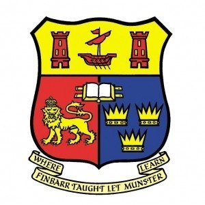

Profile
I am a software engineering manager with more than 16 years experience in software engineering and a background in development. I take pride in delivering software solutions end to end using good engineering practices and also, importantly progressing the skill and careers of the people I have managed.
As an engineering manager I believe there are 3 main areas that need to be balanced to do the job correctly - People, Delivery and Enginering. The company, team, culture and situation you are in will determine which of the above needs more emphasis for that particular team.
Experience
 - Software Engineering Manager
- Software Engineering Manager
I was originally brought into the department I joined Sky with, to help establish a good culture and develop good engineering practices through Agile ways of working. This was achieved in the Scrum Master and Development Manager roles I held at Sky by:
- Leading by example and embedding some of the good engineering practices I learned at OpenBet.
- Taking line management and career progression of employees seriously.
- Changing the mind-set of the department - focussing more on building software for the long term, through ownership and by placing a priority in non-functional requirements (supportability, performance etc.) and not just short term project deadlines.
Achievements / Contributions
- Helping in the creation of a new Software Engineer's Career Matrix at Sky.
- Attending promotion panels for developers in other departments to adhere to the new matrix for promotion evaluation.
- Software Engineering Manager
Achievements / Contributions
- Developer, Senior Dev and Support Engineer
Education
University College Cork
MSc, Multimedia, 2002 - 2004
BSc, Computer Science, 1998 - 2002
St. Finbarr's College, Farranferris, Cork
1992 - 1998
Other Information
- References available on request
- Further more detailed CV info available on my website here